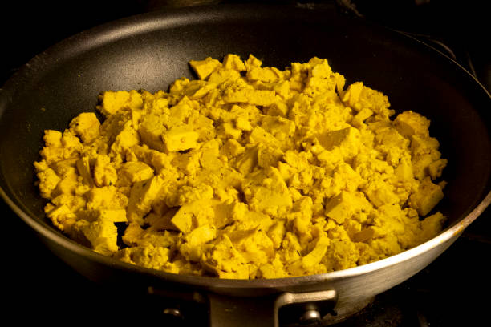

Tofu Scramble Recipe

Yummy and Easy Vegan Air Fried Tofu Potato Scramble
I love a scrambie on a lazy Sunday morning, but standing over the stove doesn't feel lazy! For the last few weeks, I've been working out how to make my family's favorite tofu and potato scramble (with broccoli!) in my air fryer for ultimate laziness, and last weekend. The result is crispy potatoes, tender tofu, and perfect broccoli ready in just over 30 minutes, but with no standing over the stove! Tofu and potato scramble is my new favorite weekend breakfast!
Ingredients
- 1 block tofu
- 2 tablespoons soy sauce
- 1 tablespoon olive oil
- 1 teaspoon turmeric
- 1/2 teaspoon garlic powder
- 1/2 teaspoon onion powder
- 1/2 cup chopped onion
- 2 1/2 cups chopped red potato
- 1 tablespoon olive oil
- 4 cups broccoli florets
Steps
- In a medium sized bowl, toss together the tofu, soy sauce, olive oil, turmeric, garlic powder, onion powder, and onion. Set aside to marinate.
- In a separate, small bowl, toss the potatoes in the olive oil, and air fry at 400F for 15 minutes, shaking once around 7-8 minutes into cooking.
- Shake the potatoes again, then add the tofu, reserving any leftover marinade. Set the tofu and potatoes to cook at 370 for 15 more minutes, and start the air fryer.
- While the tofu is cooking, toss the broccoli in the reserved marinade. If there isn't enough to get it all over the broccoli, add a little bit of extra soy sauce. Dry broccoli is not your friend, guys. When there are 5 minutes of cooking time remaining, add the broccoli to the air fryer.